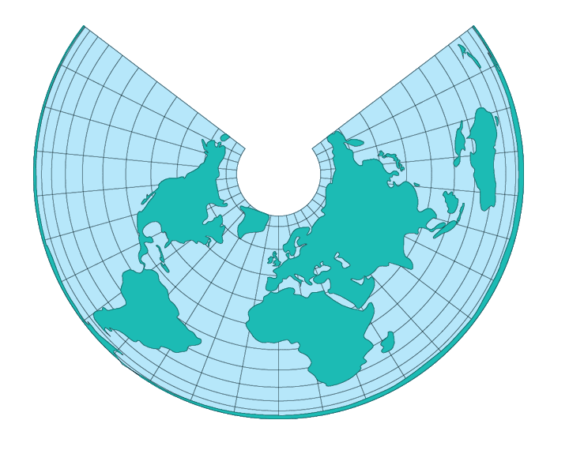

Lambert Equal Area Conic
Usage

Usage:*
Created by Johann
Heinrich Lambert in 1772, the Lambert Equal Area Conic Projection is
similar to the Albers Equal-Area Conic
projection it also has concentric circular arcs for parallels and straight
meridians. The scale is constant along any given parallel, and the scale
factor at any given point along the meridian is the reciprocal of that
along the parallel, to preserve area.
The Lambert Equal Area
Conic projection is free of scale and angular distortion only along the
standard parallel with severe stretching near each pole. But there is
symmetry about any meridian.
* Usage information source:
Snyder, John P., and Philip M. Voxland. Map Projections - A Working
Manual. U.S. Geological Survey Professional Paper 1453. Washington:
United States Government Printing Office, 1994.
Back to DSS Main Page